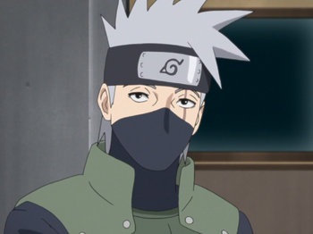

Naruto Uzumaki

Rasengan
Detección de Sentimientos Negativos
Habilidad para Flotar
Regeneración
footer
Sasuke Uchiha

Susano
Sharingan
Mangekyō Sharingan Eterno
Rinnegan
footer
Jiraya

Invocacion
Sabio
Sannin
Rasengan
footer
Kakashi Hatake

Chidori
Ninjutsu Copiado
Asesinato Silencioso
Ataque Salvaje
footer
Itachi Uchiha

Genjutsu
Amaterasu
Sharingan
Mangekyō Sharingan Eterno
footer
Minato Namikaze

Rasengan
Jinchūriki
Tipo Sensor
Sabio
footer
Sakura Haruno

Creación de Renacimiento
Jutsu Fuerza de un Centenar
Bisturí de Chakra
Ninja Médico
footer
Tsunade

Sannin
Ninja Medico
Creación de Renacimiento
Bisturí de Chakra
footer
Obito Uchiha

Vision Espacial
Regeneracion
Mangekyō Sharingan
Madera
footer
Orochimaru

Poder de la Serpiente Blanca
Absorcion de Chakra
Regeneracion
Sannin
footer